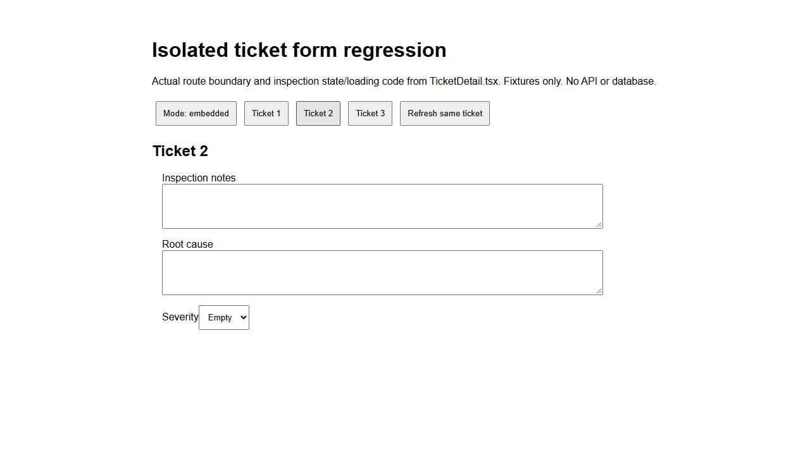

أُنجز الإصلاح في C:\Users\mh\Desktop\CMMSFINAL فقط. لم يُجر اتصال بقاعدة البيانات أو تعديل بنيتها أو بياناتها أثناء الإصلاح، ولم تُعدّل نسخة Railway. لا توجد أوامر SQL مطلوبة.
| الملاحظة | الإصلاح | التحقق |
|---|---|---|
| انتقال ملاحظات الفحص بين البلاغات | لكل رقم بلاغ نسخة مستقلة من نموذج التفاصيل، في الصفحة والنافذة المضمنة. مسودته المحفوظة تُسترجع له فقط. | بقي إدخال البلاغ نفسه عند تحديثه، وفرغت حقول البلاغ الجديد، واستُرجعت مسودته الصحيحة. اختُبر ذلك في React محلي معزول باستخدام كود حدود الصفحة وحالة الفحص الفعليين. |
| فشل تسجيل مرفقات إنشاء بلاغ IT | تُرسل بيانات الملفات مع طلب إنشاء البلاغ، وتُحفظ مع سجل تدقيقها داخل معاملة الإنشاء نفسها. إذا فشل التسجيل تتراجع المعاملة؛ لا نجاح صامت ولا توسيع لصلاحيات تعديل بلاغ IT. | اختبارات إنشاء IT والعادي والمصدر PMV2 وفكرة التحسين، وفشل الحفظ والتوافق مع العميل القديم ومنع المراقب. |
| بقاء حالة الطلب القديمة بعد المحاسب | تحديث رأس الطلب قبل انتظار الترجمة وPDF، ثم إلغاء القراءات السابقة وتحديث بيانات الرأس والدفعات في الواجهة. بقاء دفعة أخرى للحسابات يبقي الحالة الحالية كما ينبغي. | اختُبر بطء PDF وحال وجود دفعة أخرى وعدم وجودها، ورفض دور غير المحاسب، وترتيب تحديث بيانات الواجهة قبل إتمامها. |
client/src/pages/tickets/TicketDetail.tsxclient/src/pages/tickets/CreateTicket.tsxclient/src/pages/purchase/PurchaseOrderDetail.tsxserver/routers/tickets/tickets.router.tsserver/routers/tickets/ticket-creation-attachments.tsserver/routers/purchase/approvals.router.tsلم تتغير ملفات المخطط أو حراس الأدوار أو الصرف أو تقييم التكلفة. تسجيل مرفقات الإنشاء يجري على جداول المرفقات والتدقيق الموجودة أصلًا. لم تُرمّم سجلات المرفقات السابقة تلقائيًا.
يجب نشر الواجهة والخادم معًا لتفعيل حفظ مرفقات الإنشاء. النسخة المنشورة حاليًا لم تُختبر بهذه التعديلات بعد. بعد النشر: انتقل بين بلاغين وتحقق من الحقول، أنشئ بلاغ IT بصورة وPDF وتحقق من قائمة مرفقاته، واعتمد دفعة حسابات وتحقق من انتقال الرأس والدفعة معًا دون إعادة دخول.
نتائج الاختبارات · نتيجة اختبار المتصفح · مقارنة TypeScript · إثبات توقعات الاختبارات القديمة · النتيجة المنظمة
هذه نافذة اختبار وليست تغييرًا لهوية البرنامج أو للنسخة المنشورة.
